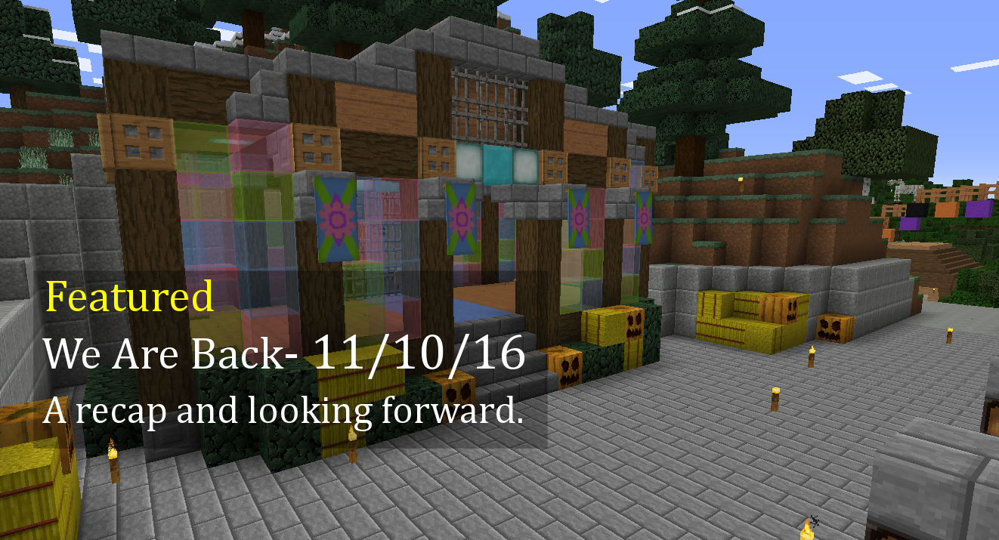
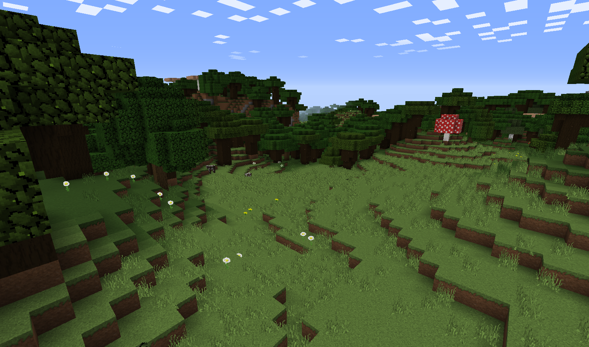
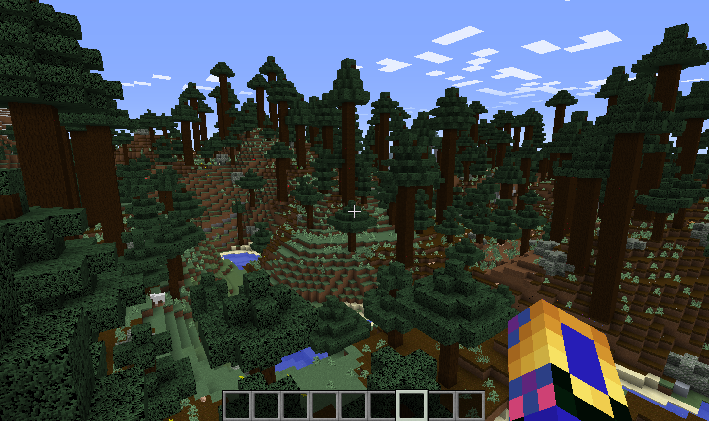
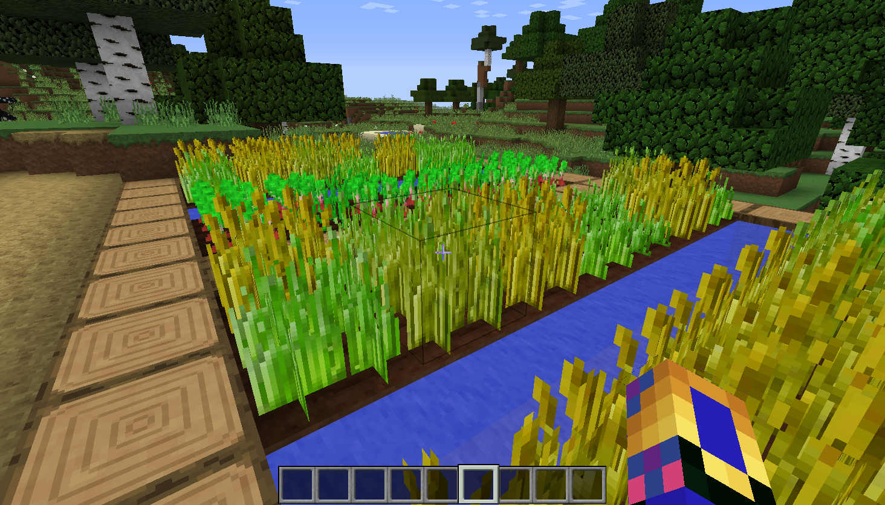
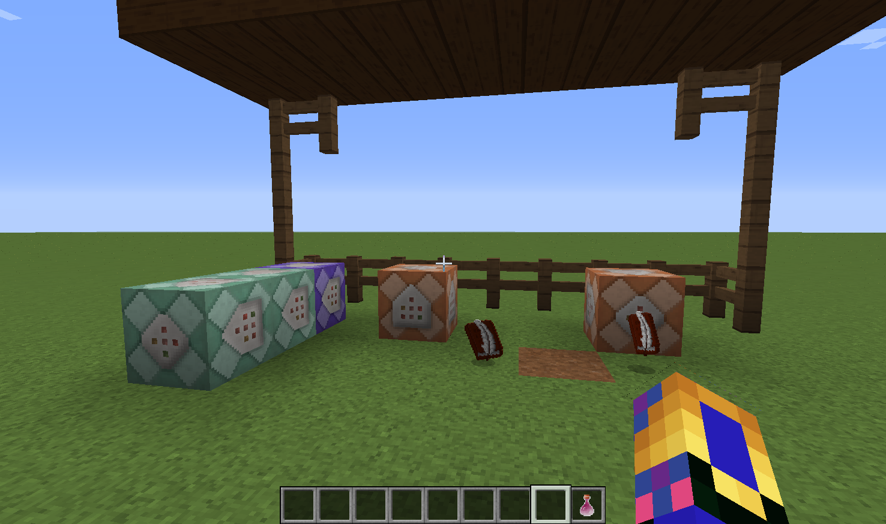
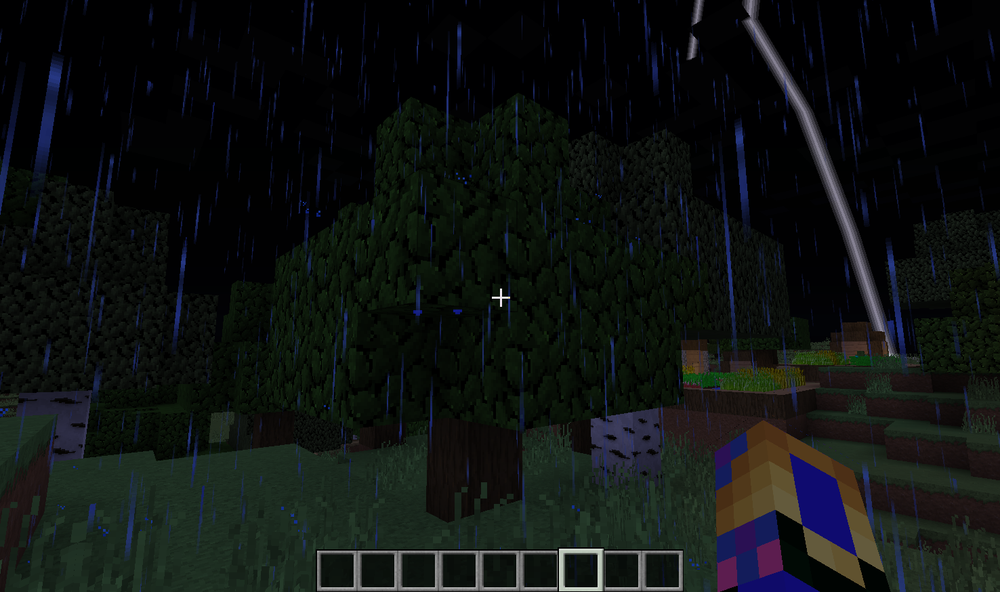
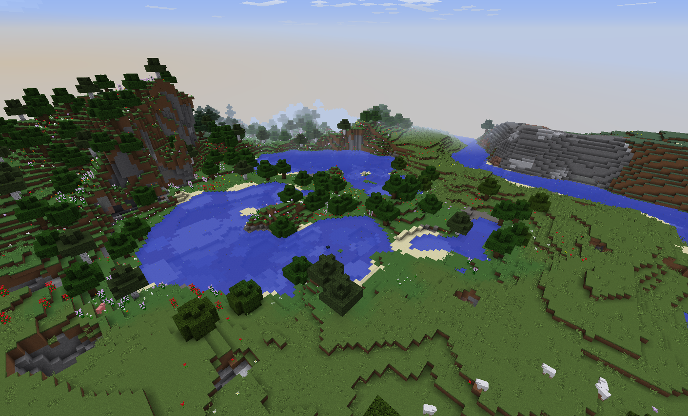
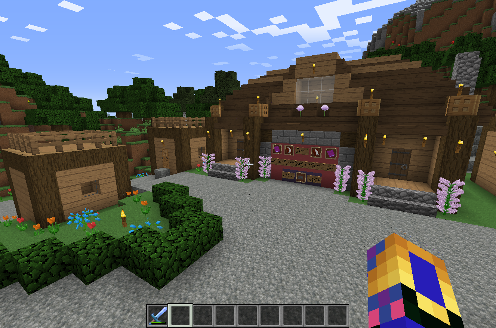

Prismic Edge


Update 1.1.6.1 Live
Posted on November 10, 2016 by JMCNation
The one for Legendary Loot
Update 1.1.6.1 brings many improvments to 1.1.6. It also lays the way for Minecraft update 1.11. We have more plans and additions we are excited to add as November goes on.
Thanks for the support everyone and we are continuing to aim for more content more often.
Patch notes can be found under change log.
JMCNation
--------------------------------------------------------------------------------------------------------------------------------------------------------
Update 1.1.6 Live
Posted on October 21, 2016 by JMCNation
The one for Night Fall Spawn Updates
After a few months of waiting we have finally released 1.1.6. This update is the first update of Night Fall and more updates will be coming in the future to finish adding the rest of Night Fall.
We have plans to do further updates to 1.1.6 which will be coming in the future. We will be also trying to get more updates out more often. Thanks for your patience.
Patch notes can be found under change log.
JMCNation
--------------------------------------------------------------------------------------------------------------------------------------------------------
Prismic Edge Update 1.1
Posted on August 14, 2016 by JMCNation
One month today August 14 has pasted since we launched construction of the website and to celebrate we have released the website's first major update. The changes are aimed at making the look of the home page cleaner and improve the viewing experience of information. The change log for 1.1 is as follows...
1.1 Change Log:
-Added a featured banner that highlights each weeks featured information
-Added event buttons under the featured banner to give a quick look at what events are coming
-Added a Silenda of the Past banner that shows at a glance what she is offering in trades
-Removed the news page and moved it's content to the home page
-Added an About page that gives information about Prismic Edge related information
-Renamed the Update tab to Server Info
-[Edit]Added a Featured Playlist page to allow for viewing of older weekly featured info
-Minor improvments to general website
JMCNation
--------------------------------------------------------------------------------------------------------------------------------------------------------
The Future Is Bright And Full Of Updates
Posted on July 25, 2016 by JMCNation
The month long break here at Prismic Edge is over and with this comes more frequent updates! With the reveal of "Night Fall" a new expansion to the server that will added many things you can discover, the focus here at the studio is on this new expansion, but we also have some things planned that we will release before the launch of "Night Fall" this Fall.
Thanks for the continued support and for the help that is given to remove bugs that cause server problems. More information will be given about "Night Fall" as we get closer to launch this fall.
JMCNation
--------------------------------------------------------------------------------------------------------------------------------------------------------
Night Is Coming...
Posted on July 25, 2016 by JMCNation
Night Fall is near and a new adventure awaits the heroes of Equestria. Fight back a new threat and gain new rewards and goals to work towards. The fight begins this Fall. The task is difficult, but you are ready for the challenge.
Gear up and join us this fall for the new expansion "Equestrian Night Fall".
JMCNation
--------------------------------------------------------------------------------------------------------------------------------------------------------
Update 1.1.5.2 Live
Posted on July 22, 2016 by JMCNation
The one for Server Improvements
Update 1.1.5.2 is live. This update does not mean server updates are coming more regularly, however small updates will happen every so often when needed. Thanks for the continued help with reports on bugs. Keep up the good work.
Detailed list of changes can be found on the change log page.
JMCNation
--------------------------------------------------------------------------------------------------------------------------------------------------------
Website Launch